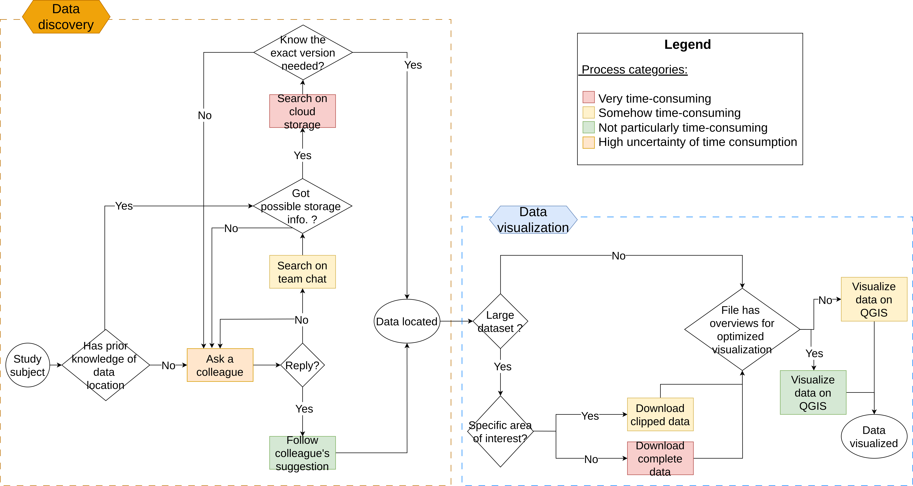
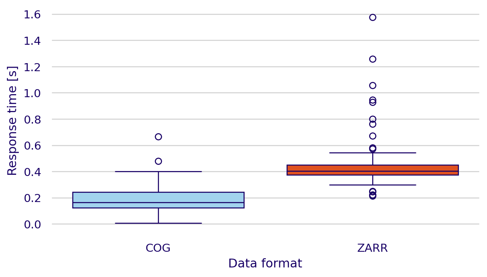
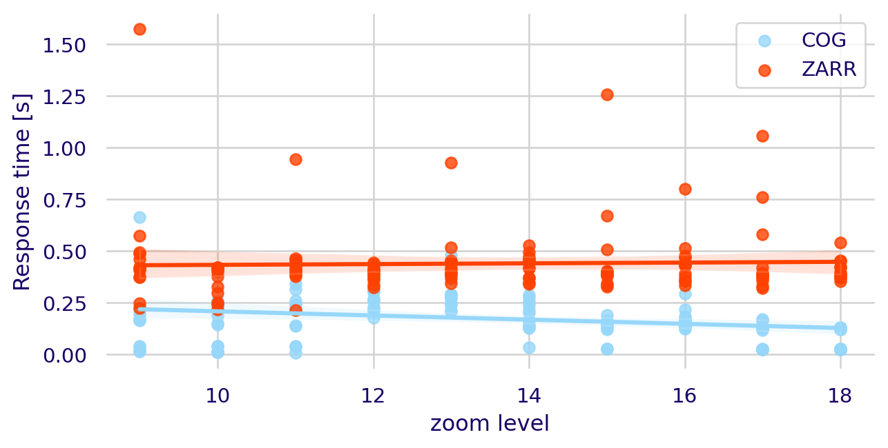

Make this Notebook Trusted to load map: File -> Trust Notebook
Cataloguing and Visualizing
Big Geodata
Martín Domínguez Durán
Wageningen University & Research


2024-08-07
1 What is the problem?
Spatial data is big data
- Hundreds of satellites gather information on a weekly to daily basis
- High Velocity/Variety/Volume

Taken from: miro.medium.com
Spatial data challenges
- How to process it?
- How to store it?
- How to easily acces it?
- How to interact with it?
Spatial data challenges
- This makes Spatial Data Infrastructures (SDIs) a necessity.
- Traditional SDI focus: preservation > accesibility. (Durbha et al. 2023)
- New developments can help change this.
Cloud storage
Data discovery (e.g. STAC)
Visualization interfaces (e.g. TiTiler)
Spatial data challenges
- This makes Spatial Data Infrastructures (SDIs) a necessity.
- Traditional SDI focus: preservation > accesibility. (Durbha et al. 2023)
- New developments can help change this.
Cloud storage
Data discovery (e.g. STAC)
Visualization interfaces (e.g. TiTiler)
New developments
Data discovery (e.g. STAC)
New developments
Data discovery (e.g. STAC)
Definiton
Common structure for describing and cataloging spatiotemporal assets.
New developments
Data discovery (e.g. STAC)
Definiton
Common structure for describing and cataloging spatiotemporal assets.
Components
- Catalogs
- Collections
- Items
- Assets
New developments
Data discovery (e.g. STAC)
Definiton
Common structure for describing and cataloging spatiotemporal assets.
Components
- Catalogs
- Collections
- Items
- Assets
Types
- Static
- Dynamic
New developments
Visualization interfaces (e.g. TiTiler)
New developments
Visualization interfaces (e.g. TiTiler)
Definiton
A dynamic tiling service for raster data. It is design to generate tiles on the fly by reading only parts of cloud-optimized data formats.
New developments
Visualization interfaces (e.g. TiTiler)
Definiton
A dynamic tiling service for raster data. It is design to generate tiles on the fly by reading only parts of cloud-optimized data formats.
Cloud optimized data formats
- COGs
- Zarrs
2 Why do we care?
S11 works with big data
Processing of the data ✅
- DPROF
- Processs terabytes of spatial data
- Efficient and scalable
S11 works with big data
When it comes to finding the data ❌
- Google Storage buckets
- Gitlab repositories
- ClickUp tasks
- The almighty

3 How did I plan to help fix it?
Research questions:
- What are the current challenges, practices, and user experiences related to data discovery and data visualization in the company?
- How can cloud-optimized data formats, cloud services and SpatioTemporal Asset Catalog (STAC) specifications be integrated to enhance the process and experiences of discovering and visualizing big spatial data within the company?
- To what extent do dynamic tiling services perform in visualizing different cloud-optimized data formats?
1 Current state of data discovery and visualziation
- Carried out interviews to define the baseline scenario
- Created a flowchart representing current workflow
- Thematic Content Analysis
2 Effective integration
3 Comparison of visualization different cloud-optimized formats
- Used two dynamic tiling services for COGs and Zarrs 1
- Assessed the performance by measuring the response times of requesting tiles on both services
- Different colormaps and zoom levels
4 What did I find?
1 The current state

1 The current state
TCA:
- High dependency on colleagues for dataset location.
- Disorganized structure of Google Storage Buckets.
- Data familiarity helps users locate data more quickly.
- Locating data is dependent on recurrent work with a specific dataset.
- Not intuitive naming of repositories with datasets.
- Understanding of diverse tools to access different data is currently necessary.
- Download of data is required in most cases to visualize it.
- Not one place where all existing data can be found.
1 The current state
TCA:
- High dependency on colleagues for dataset location.
- Disorganized structure1 of Google Storage Buckets.
- Data familiarity helps users locate data more quickly.
- Locating data is dependent on recurrent work with a specific dataset.
- Not intuitive naming\(^1\) of repositories with datasets.
- Understanding of diverse tools\(^1\) to access different data is currently necessary.
- Download of data is required in most cases to visualize it.
- Not one place where all existing data can be found.
2 Tools to create an S11 catalog
Datasets selected \(\rightarrow\) S11-cats \(\rightarrow\) Static catalog


2 The step towards a dynamic catalog
2 The step towards a dynamic catalog
Multiple services
PgSTAC
STAC-fastAPI
TiTiler-PgSTAC
TiPg
2 The step towards a dynamic catalog
Multiple services
PgSTAC
STAC-fastAPI
TiTiler-PgSTAC
TiTiler-xarray
üõû Kubernetes üõû
2 The importance of a dynamic catalog
2 The deployed version of STAC Browser
2 Effective integration

3 Data visualization

Alignment with Barciauskas et al. (2024).
3 Data visualization

Differences with Barciauskas et al. (2024).
5 What is next?
Authentication
- Add an authentication layer to the catalog still needs to be done and should be the next step to ensure the privacy of the data.
Vector data visualization
- TiPg is a service included in the eoAPI deployment that wasn’t used, but should be integrated to visualize, for instance, supply chain datasets.
6 Conclusions
1 Current state
- Workflow at S11 is complex and time-consuming
- Major inefficiencies found were: High dependency on colleagues, disorganized Google Storage Buckets, and the need to download entire datasets for visualization.
- A user-friendly data discovery service with integrated data visualization is needed
2 Effective integration
- Integration of cloud-optimized data formats, cloud services, and STAC specifications has the potential to improve data discovery and visualization at Satelligence.
- We developed a methodology to effectively do the integration.
3 Data visualization
- COG tiles are, on average, 2.53 times faster to request than Zarr tiles.
- Future developments in Zarr could make it more even.
References
Barciauskas, Aimee, Max Jones, Kata Martin, Sean Harkins, and Vincent Sarago. 2024. “Next-Gen Zarr Web Map Visualization.” In EGU General Assembly Conference Abstracts, 11805. EGU General Assembly Conference Abstracts. https://doi.org/10.5194/egusphere-egu24-11805.
Durbha, Surya S, Jibonananda Sanyal, Lexie Yang, Sangita S Chaudhari, Ujwala Bhangale, Ujwala Bharambe, and Kuldeep Kurte. 2023. Advances in Scalable and Intelligent Geospatial Analytics: Challenges and Applications. 1st ed. Boca Raton: CRC Press. https://doi.org/10.1201/9781003270928.
Miranda Espinosa, Maria Teresa, Gregory Giuliani, and Nicolas Ray. 2020. “Reviewing the Discoverability and Accessibility to Data and Information Products Linked to Essential Climate Variables.” International Journal of Digital Earth 13 (2): 236–52. https://doi.org/10.1080/17538947.2019.1620882.
Appendix
2 Effective integration
(What do you mean queryable? Aren’t all catalogs queryable?)
Static catalog
- Series of json files with hierarchical structure.
- Can be browse easily (Like a website)
Dynamic catalog
- Queryed through HTTP requests.
How to go from one to the other? eoAPI
3 Comparison of visualization of different cloud-optimized formats
(What are these weird “cloud-optimized” data formats?)
COGs
- Geotiffs
- Contain overviews
- Have internal tiling
Zarrs
- Divided in chunks
- No overviews or pyramids
- Work for storing multidimensional arrays